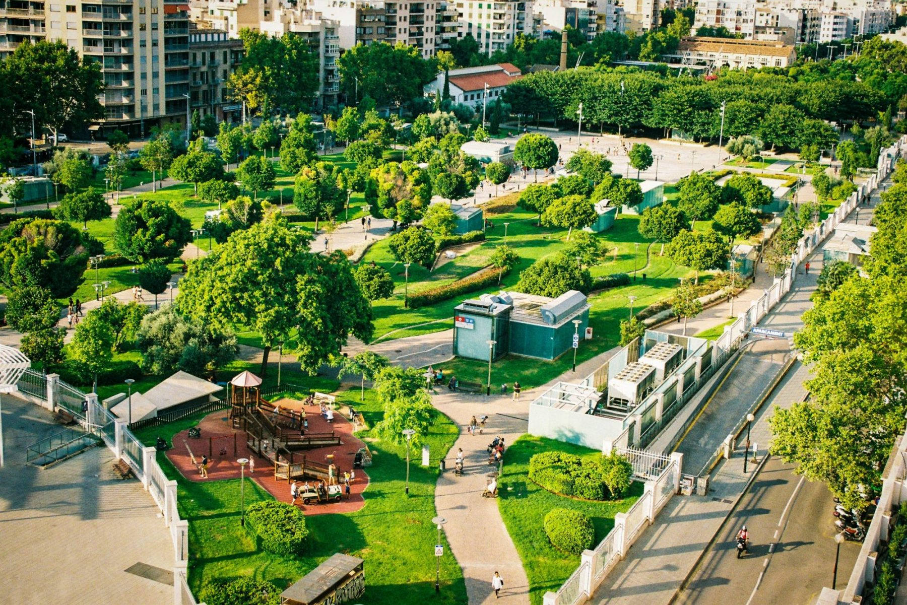

We encourage the placement of smart sensor technology in critical city zones. This data-driven framework helps communities track live decibel levels to protect shared public spaces.
Smart tracking sensors keep monitor streams active 24/7. This helps record real-time decibel numbers immediately whenever loud noises happen.
Making live sound data visible helps local managers and visitors see the exact times when public areas become too crowded with urban noise.

Lowering sound levels in shared areas creates immediate improvements for the people who live, work, and gather in the city every day.
Slowing down heavy city sounds helps reduce daily stress. Less noise allows people to sleep better at night and stay calm during their working hours.
Quiet neighborhoods make it easier for people to talk and listen to one another in public without needing to shout over traffic or background roar.
Children and adults can learn more effectively when loud disruptions are kept away from classrooms, work desks, and quiet study areas.
When streets and squares maintain comfortable sound levels, individuals stay longer in public areas, supporting community walkability and local outdoor activity.
Find simple answers regarding how this quiet layout helps improve city areas without disturbing daily activities.